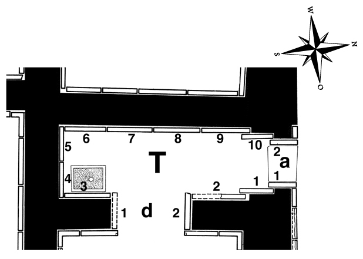

Room T ...
Doorway ...
Click on T in the middle of the room to see all panels positioned in their respective walls, or on the individual panels along the inner walls and in the entryways to go to CDLI pages associated with them.

|
Relief Slabs by Collection
(duplication results from individual fragments in different places)
Bowdoin College, Brunswick, ME, USA
T-06: Haskell Coll. 1860.4
Brooklyn Museum, Brooklyn, NY, USA
T-07: 55.151
T-08: 55.152
Metropolitan Museum of Art, New York, New York, USA
T-04: MMA 1984.11
T-05: MMA 1917.190.2082
Skulpturensammlung, Dresden, Germany
T-02: Herrmann-Verzeichnis 20
University of Zurich, Zurich, Switzerland
T-02: 1912 (ex. 184)
Nimrud, Iraq
T-01: in situ
T-02: in situ
T-03: in situ
T-04: in situ
T-05: in situ
T-04: Nimrud fragment no. 72
missing (incl. fragments)
T-01
T-03
T-04
T-09
T-10
|
| |
|